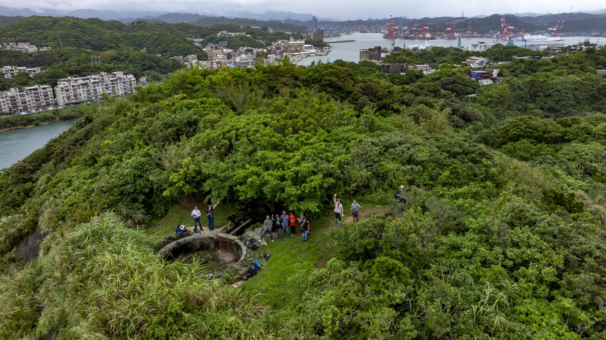
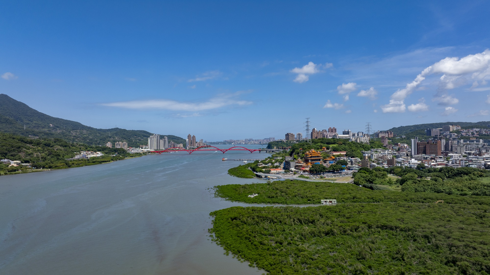
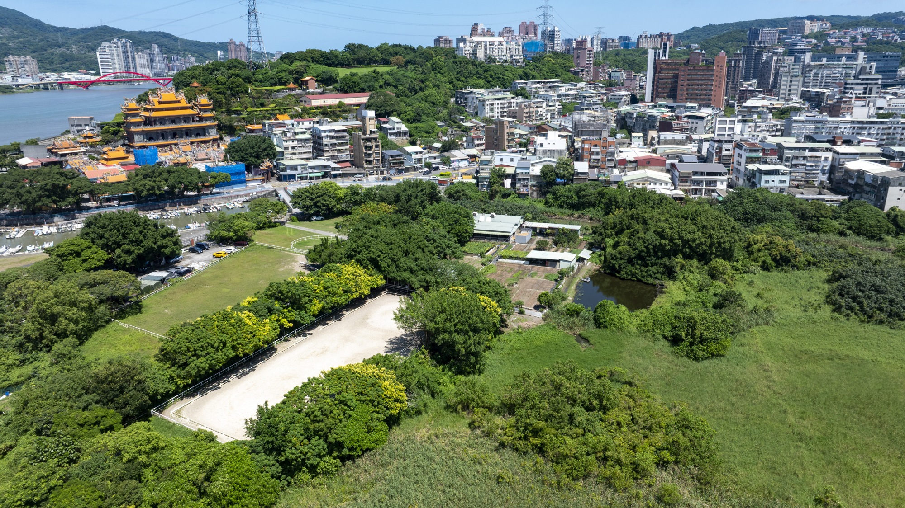
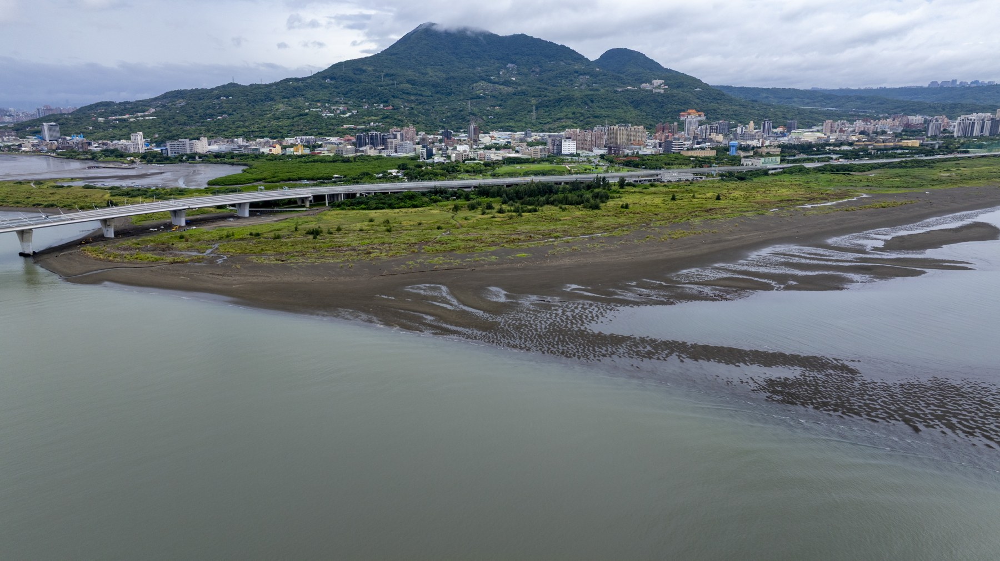
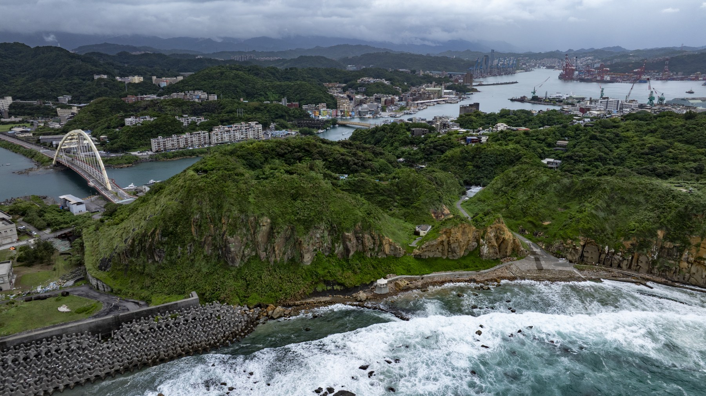
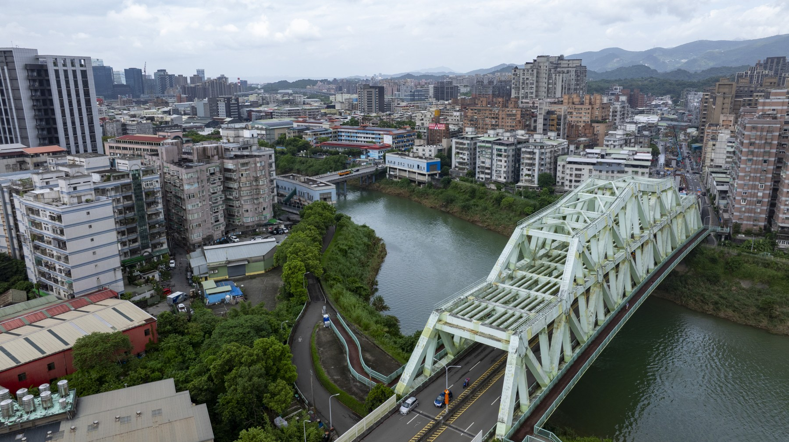
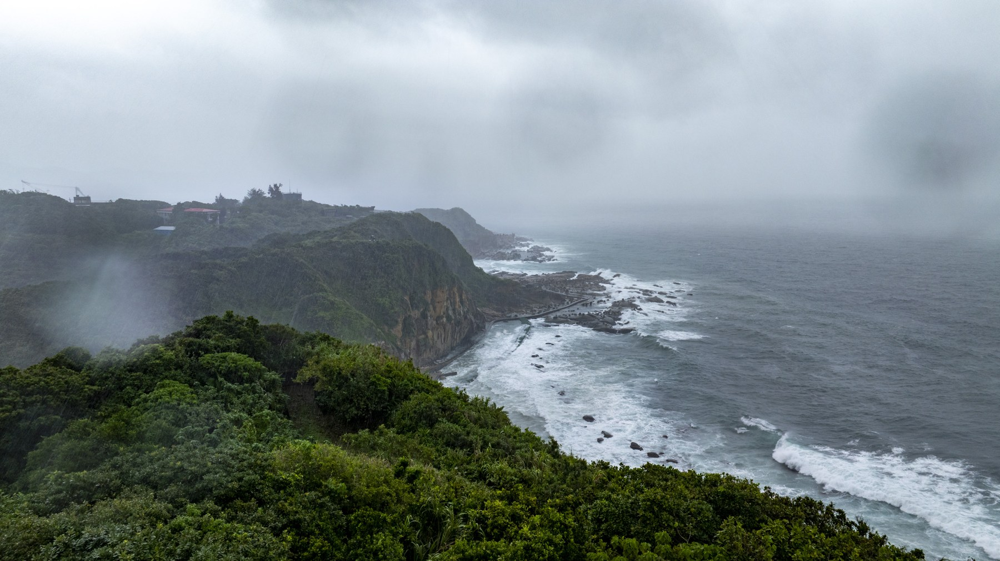

消失的原民故事
從地面走讀，從空中的觀看把土地的記憶寫進我們的鏡頭
我們原以為，自己已經很熟悉這座城市。
熟悉上班途中經過的橋，熟悉假日散步的河堤，也熟悉那些說了無數次的地名。直到跟著老師翻開古地圖，才發現熟悉的街道之下，還有一層我們未曾細讀的往事。北投、關渡、錫口、八里，那些日常用來辨認方向的名字，開始帶著問題回到眼前：在今日的道路與樓房出現以前，人們如何沿河往來，又如何在水岸安頓生活？
這是「消失的原民故事」計畫的起點。南港社區大學與臺北市原住民族部落大學攜手開設工作坊，由何懷嵩老師帶領我們，透過文獻、走讀、空拍與影像創作，探尋凱達格蘭族留在臺北及周邊地區的歷史線索。參與的人來自不同背景，各自帶著人生經驗，也帶著對這片生活之地的好奇。
從字裡讀見來處
翻開古地圖與歷史記載，辨讀社名、水路與聚落線索。資料裡的差異，也成為我們出發時帶著的問題。
把問題帶到現場
跟著老師走向河岸、街巷與展場，對照山勢、地形與文物，讓紙上的名字與眼前的風景逐漸相連。
換一個高度觀看
飛越歷史，記錄土地。空拍機緩緩升起，鏡頭沿著水路前行，將河灣、山勢與聚落收進視野。我們以空中影像對照古地圖，在今日的風景裡，探尋先民生活的線索。
讓發現長成故事
整理照片、剪輯影片，將文獻線索、現場觀察與創作想像編織成作品，留下每個人理解地方的方式。
出發以前，我們先學著閱讀。古地圖上的河道、文獻裡不盡相同的社名，以及歷史圖像中由他人描繪的面貌，都需要細細辨認。有些資料讓輪廓漸漸清楚，有些卻帶來更多疑問。
老師引領我們把問題帶到現場，讓紙頁上的記載，與眼前的山勢、水路和街廓彼此對照。不同背景的同行者，也將自己的經驗帶進討論。一個地名，因此有了更多理解的入口。

當空拍機緩緩升起，被建築遮住的河灣展開了，原本分散的兩岸也連成一幅完整的風景。我們開始試著從水路理解這座城市：哪裡可以靠岸，哪裡通往更遠的地方，山與河如何牽引人們生活的方向。
空拍機彷彿成了一部穿越時光的機器。鏡頭拍下當下，思緒卻循著文獻與地形，往更早的年代伸展。當橋梁尚未橫跨水面，當街道還沒有今日的模樣，曾在這裡生活的人，會從怎樣的角度看見河岸與天空？
這些想像成為創作的起點，也提醒我們繼續查找、比對，分辨哪些已有依據，哪些仍有待追問。

循著水路與古地名
從河口走向海岸 再讀回城市的來處




回到課堂，照片、影片與討論逐漸長成各自的作品。有人從古地名出發，有人凝視博物館中的展件，也有人讓實拍畫面與歷史情境的創作相遇。我們在彼此的敘述裡，看見了自己未曾留意的細節。


